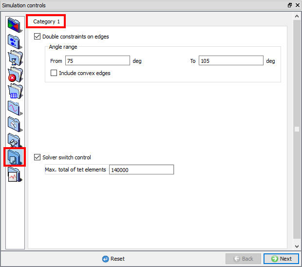

[3D]: There are many different specialized features within DEFORM - Preprocessor that are controlled through data files. The purpose for this type of implementation is that these functions are used in only a few rare instances and if they find popular use, they can be incorporated into DEFORM keywords. When these data files are used, the functionality is available if the data file is located in the same directory as the current problem running. Since they are not contained within neither in database nor the keyword files, the control file has to be moved with the database or the keyword to run the problem with the same functionality if a different directory or computer is used to run a simulation. When one of these control files are used, a warning is automatically posted in the message file heading letting the user know that one of these files exists.

Control files category1 settings
From version 6.0, these data files can be specified through the graphical interface in the Control File window. (See Fig. 9.8.1.)
This defines two angles where if a node is contacting a die corner an angle between these values, the node will be given a double contact condition. This is further explained in the Appendix XV: The Double Concave Corner Constraint.
This defines a number of elements where the switch to sparse solver is blocked. The purpose of this is to prevent the sparse solver from being activated in cases where the problem is too large.
Related Topics:
9.1. Simulation type Settings
9.2. Defining Step
9.3. Stopping Controls
9.4. Remesh Criteria
9.5. Solver Settings
9.6. Process Conditions
9.7. Advanced Options
9.9. Thermomechanical variables